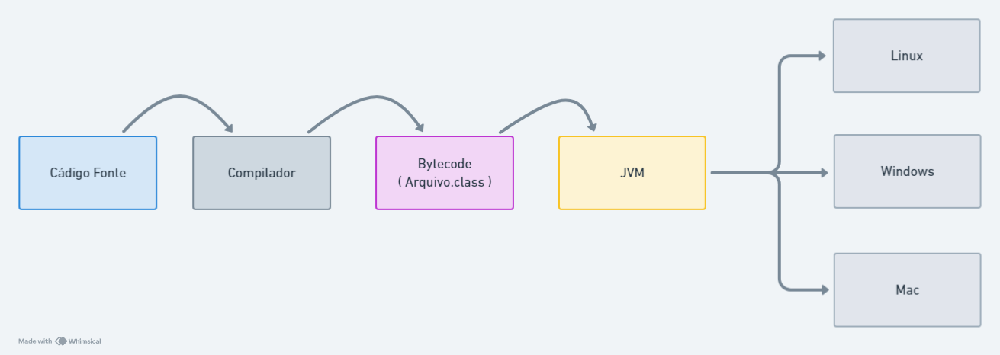

Paradigma de Programação
O que é paradigma de programação?
Segundo Tucker e Noonan (2009), paradigma de programação é o modelo que define um padrão de resolução de problemas que está associado a determinados programas e linguagens. Cada paradigma aborda uma maneira diferente de resolver os problemas computacionais. Há linguagens criadas que suportam apenas um paradigma (SmallTalk, Prolog, Haskell) e outras que suportam múltiplos paradigmas (Java, C++, Python).
Contexto Histórico
Na década de 1950, surgiram as primeiras linguagens conhecidas como "linguagens de alto nível" (abreviadas em inglês como HOLs). Diferentemente das linguagens de máquina e assembly, as HOLs não dependem de uma arquitetura de máquina específica, o que proporciona maior flexibilidade e portabilidade. Entre as linguagens que se destacaram nesse período, podemos citar o Fortran e o COBOL, que adotam o paradigma imperativo. Além disso, o ALGOL se destacou como uma linguagem pioneira no paradigma estrutural, enquanto o LISP se consolidou no paradigma funcional.
O conceito de orientação a objeto foi um processo evolutivo, no qual cada linguagem adotava um modelo de abstração de dados. A linguagem SIMULA 67 desenvolvida por dois noruegueses, Kristen Nygaard e Ole-Johan Dahl foi a primeira a fornecer suporte limitado para abstração de dados e introduzir o conceito de classe, embora não tenha se tornado popular por causa disso. Posteriomente, a linguagem SmallTalk, criada por Alan Key e sua equipe na XEROX PARC, foi a primeira a dar suporte completo a POO. A orientação a objetos é, sem dúvida, o paradigma de programação mais utilizado atualmente, sendo suportado por diversas linguagens.
Orientação a Objeto
A orientação a objetos é um modelo no qual um programa é composto por uma coleção de objetos que interagem entre si, trocando mensagens que modificam seus estados. Nesse contexto, a passagem de mensagens permite que os objetos de dados se tornem ativos, em vez de passivos. Isso significa que cada objeto possui atributos, que são variáveis representando características, e métodos, que representam comportamentos. Além disso, cada objeto é distinguido dos demais por seu endereço de memória exclusivo. O paradigma orientado a objeto se baseia em quatro conceitos fundamentais:
Abstração
Processo de identificar os atributos mais significativos e importantes para o contexto do programa.
Encapsulamento
Mecanismo que permite agrupar constantes logicamente relacionadas, variáveis e funções em uma nova entidade chamada classe. Em termos de POO, uma classe é uma definição de um tipo de dado abstrato. As variáveis de uma classe são chamadas de variáveis de instância, suas inicializações são feitas por construtores, e suas funções são chamadas de métodos. Cada instância de uma classe é um objeto.
A ideia central do encapsulamento é garantir que as variáveis de instância só possam ser acessadas através dos métodos implementados na mesma classe. Isso assegura que as modificações sejam feitas de forma controlada, mantendo a consistência e integridade dos dados e reduzindo a possibilidade de erros.
Herança
A orientação a objeto permite a reutilização de código por meio da herança. Uma classe pode ser declarada como subclasse de outra herdando as variáveis e métodos da classe mãe, ou também chamada de superclasse, além de poder modificar para atender as diferenças da classe mãe. Se uma nova classe é uma subclasse de uma única classe pai, o processo de derivação é chamado de herança simples. Se uma classe tem mais de uma classe pai, o processo é chamado de herança múltipla.
Polimorfismo
Refere-se a ligação tardia de uma chamada ao método em uma hierarquia de herança. Um método declarado na classe mãe pode ser sobrescrito nas classes filhas para atender as diferenças entre eles. Se um cliente de A e B tem uma referência ou um ponteiro para objetos da classe A, essa referência ou ponteiro também pode apontar para objetos da classe B, tornando-a uma referência ou um ponteiro polimórfico. Se o método, definido em ambas as classes, é chamado pela referência ou pelo ponteiro polimórfico, o sistema de tempo de execução deve determinar, durante a execução, qual método deve ser chamado, o de A ou o de B. Um propósito para essa vinculação dinâmica é permitir que os sistemas de software sejam melhor estendidos durante o desenvolvimento e a manutenção.
Java
Origem
Em 1991 uma equipe de desenvolvimento da Sun Microsystems(fabricante de computadores e software),denominada “Green Team” dirigida por James Gosling, criou um projeto chamado “Oak”, originalmente seria uma linguagem criada para ser utilizada em aparelhos eletrônicos, principalmente em eletrodomésticos, seu principal objetivo seria a comunicação entre diferentes dispositivos. Em 1992 o primeiro projeto que utilizava o “Oak” foi demonstrado, denominado “Star Seven”, um controlador touchscreen portátil e interativo para dispositivos de entretenimento,nessa mesma demonstração foi criado o “Duke”, mascote do java.
Em 1994, o “Oak” foi reformulado e teve seu nome mudado para Java, sua principal reformulação foi a transição de uma linguagem para dispositivos eletrônicos para a internet, e lançado um navegador conhecido como “HotJava”, trazia toda a interatividade, dinamicidade e animação que a linguagem Java permitia para dentro de um navegador.Em 1995 o Java foi disponibilizado para o mundo, a maioria dos navegadores incorporaram o java em suas páginas web, tornando assim o java uma das principais tecnologias de programação para a internet. Em 2007 a Sun tornou o código-fonte do java aberto, tendo total acesso ao código principal da JVM(Máquina virtual Java) e em 2009 a Oracle Corporation concluiu a aquisição da Sun Microsystems e com ela adquiriu todos os direitos sobre as tecnologias Java desenvolvidas pelos desenvolvedores da Sun dentro do Green Team.
Ecossistema
Java é uma linguagem de programação orientada a objetos que permite aos desenvolvedores modelar software de maneira mais intuitiva e modular. A Java Virtual Machine (JVM) é o componente central que permite a execução de programas Java. Quando um programa é compilado, o código-fonte (.java) é transformado em bytecode (.class), que é um formato intermediário. A JVM interpreta esse bytecode, permitindo que ele seja executado em qualquer plataforma que tenha uma JVM instalada, independentemente do sistema operacional subjacente. Essa característica é a essência do slogan "escreva uma vez, execute em qualquer lugar".
Para executar um programa Java, é necessário ter a Java Runtime Environment (JRE) instalada. A JRE inclui a JVM, bibliotecas padrão e componentes essenciais para a execução de aplicações. O Java Development Kit (JDK) é um conjunto de ferramentas para desenvolvedores que inclui a JRE, compiladores, e uma série de utilitários que facilitam o desenvolvimento de aplicações Java. O JDK é fundamental para programadores que desejam criar software, pois oferece suporte para o desenvolvimento de aplicativos em diferentes plataformas.
Aplicações
Java é amplamente utilizado em várias áreas devido à sua robustez e versatilidade:
Desenvolvimento Web: Java é uma escolha popular para desenvolvimento de aplicações web, utilizando frameworks como Spring, que facilita a criação de aplicativos complexos e escaláveis. JavaServer Faces (JSF) e Hibernate também são ferramentas comuns que simplificam a construção de interfaces de usuário e o acesso a bancos de dados, respectivamente. Tecnologias ultilizadas: Frameworks como Spring, JavaServer Faces, Hibernate, e servlets.
Desenvolvimento Mobile: Java é a linguagem principal para o desenvolvimento de aplicativos Android. O Android SDK oferece um conjunto abrangente de ferramentas e APIs que permitem aos desenvolvedores criar aplicativos para uma vasta gama de dispositivos móveis. Além disso, a linguagem é usada em conjunto com Kotlin, que é uma linguagem mais moderna, mas ainda permite que os desenvolvedores utilizem bibliotecas Java existentes. Tecnologias ultilizadas: Android SDK, JavaFX para aplicações gráficas.
Sistemas Embarcados: Java é utilizado em sistemas embarcados, como dispositivos de automação industrial e controle. O Java Micro Edition (Java ME) é uma versão específica da linguagem projetada para dispositivos com recursos limitados, como sensores e microcontroladores. Tecnologias ultilizadas: Java ME, Java Card (para dispositivos inteligentes e cartões).
Comunidade
Internacional
Java possui uma comunidade ativa e vibrante, com diversos eventos e grupos de usuários. Comunidades como o Java User Group (JUG) reúnem entusiastas e profissionais para discutir inovações, melhores práticas e compartilhar conhecimentos. Eventos como o TDC (The Developer's Conference) e o Java Summit são realizados anualmente e atraem desenvolvedores de todo o país, oferecendo palestras, workshops e oportunidades de networking.
Nacional
O SouJava é um grupo de usuários, formado por desenvolvedores e evangelistas da tecnologia Java no Brasil, e tem como objetivo fortalecer, expandir e profissionalizar o uso de Java no país. O SouJava é um dos mais ativos e importantes grupos de usuários do mundo, e realiza diversas atividades no Brasil, e ajuda na organização do movimento Java mundial. O SouJava mantém reuniões presenciais, eventos e uma presença online, ajudando a comunidade Java brasileira a aplicar a tecnologia Java em projetos reais.
Eventos em Brasília: https://www.meetup.com/pt-BR/soujava-brasilia/?eventOrigin=event_home_pageREFERÊNCIAS
TUCKER, A. B.; NOONAN, R. E. Linguagens de programação: princípios e paradigmas. 2. ed. São Paulo: AMGH, 2009
SEBESTA, Robert W. Conceitos de linguagens de programação. 9. ed. Porto Alegre: Bookman, 2011
História de Java - Uma história completa do desenvolvimento Java (1991-2021)